Hi. My name is Joe Smith. I'm in the picture with a hat. My wife, Nat, is beside me there. My life's work is as an interface between people and challenges they face, mostly information technology related. Currently, I wear a few special hats in that regard:
- Cyberinfrastructure Engineer at the Great Lakes Observing System
- President of the Condominium Association Board I am part of
- City of Saline Parks Commissioner - Chair

Nat is a youth desk aide at the Saline District Library. She is an inspiration to all that approach her looking for a new read, and possibly a new adventure (including me). Previously, for 5 years, including the first couple of the COVID-19 pandemic, she was a housekeeper for Brecon Village retirement home in Saline. Prior to that, a volunteer in many roles.
Together, we're making the best life of our own, while also hopefully the lives of others the best they can be too.
Hope things are alright out there for you, and if not, you have a couple pairs of ears and eyes here to help you process. Feel free to reach out.
Take care out there

- Joe Smith
jpTheSmithe@gmail.com
734-972-8096
(Icon attributions: suitcase by Full Ratio; Document/Resume icon by James Tsao)